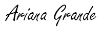

|

|

|

|

|
2010-2012: Victorious y otros trabajos con Nickelodeon.
|
|
font color="#565248">
Grande audicionó para la serie de Nickelodeon, Victorious
en Nueva York, junto a su compañera de reparto de 13, Elizabeth Gillies, en 2009. En esta
sitcom basada en una escuela de artes escénicas llamada Hollywood Arts, Grande interpretó a Cat Valentine. A petición del productor ejecutivo
Dan Schneider tuvo que teñirse el cabello de color rojo cada dos semanas ya que era un característica
que encajaría con la personalidad de Cat.
La serie empezó a grabarse en octubre de 2008 y fue estrenada el 27 de marzo de 2009, logrando una audiencia de 5.7 millones de espectadores en su estreno,
logrando la segunda mayor audiencia para una serie de imagen real en toda la historia de Nickelodeon. El personaje que desempeñó en la serie fue comparado
con la desventurada Tai interpretado por Brittany Murphy en la serie Clueless de 1995, y fue descrito como
«muy impresionante y fácilmente influenciable» pero «generalmente dulce».27 En ese mismo año, interpretó a Miriam en el musical Cuba Libre.
musical Cuba Libre.
Acabada la primera temporada de Victorious, Grande quiso enfocarse en una carrera musical, y empezó a trabajar en su álbum debut en agosto de 2009. Ella señala que
«la actuación es divertida, pero la música ha estado primero y, ante todo conmigo».Para fortalecer su rango vocal, comenzó a trabajar con el entrenador vocal Eric
Vetro. Grande hizo diversas grabaciones de sí misma cantando versiones de Adele, Whitney Houston y Mariah Carey. Un amigo
de Monte Lipman, director general de Republic Records, se encontró con uno de
los videos de Grande. Impresionado por su voz, envió los links a Lipman, quien hizo que Grande firmara un contrato discográfico con Republic.
|
|
|
|
En diciembre de 2010,publicó su sencillo debut «Put Your Hearts Up», y poco después manifestó su disconformidad con la
canción. Mostró su desagrado por el sonido bubblegum pop, ella aclaró que no tuvo el interés en grabar música de ese género, y se lo hizo saber a su discográfica.
En 2011, se supo que Victorious no fue renovado luego de dos temporadas.La temporada final fue estrenada en septiembre de 2011, y el episodio final fue estrenado e
en febrero de 2012. Mientras tanto, Nickelodeon creó una serie derivada de iCarly y
Victorious, llamado Sam & Cat protagonizado por Grande y
Jennette McCurdy, donde continúan interpretando los personajes de Cat Valentine y Sam Puckett.
Oficialmente, la serie fue tomado por Nickelodeon el 29 de noviembre de 2012. La serie se estrenó el 8 de junio de 2012. A pesar del éxito de Sam & Cat, la serie fue
cancelada por una disputa entre McCurdy y Nickelodeon.El episodio final se estrenó el 17 de julio de 2014.
En octubre del 2011, Grande colaboró en la canción «Popular Song» del británico
Mika. Poco después, en fiestas navideñas protagonizó la producción A Snow White Christmas
como Blancanieves junto a Charlene Tilton y Neil Patrick Harris en
Pasadena Playhouse .
|
|